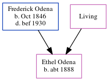

Ethel A Odena c1888 -
[ Home ] | [ Calendar ] | [ Surnames Index ] | [ Census Index ] | [ Family History ]The child of Frederick Odena and Amanda Eaglin, Ethel Odena, the first cousin three-times-removed on the father's side of Michele Copp (née Phillips), was born in Michigan c. 18881. In 1920, she was living in Detroit Ward 8, Wayne, Michigan1.
Parents
- Frederick Marion was born in Oct 1846
- Amanda Pemberton
Citations
- 1920 United States Federal Census Online publication - Provo, UT, USA: MyFamily.com, Inc., 2005. For details on the contents of the film numbers, visit the following NARA web page: NARA. Note: Enumeration Districts 819-839 on roll 323 (Chicago City.Original data - United States of America
Family Tree
Generated by ged2site. Last updated on Jun 6, 2024